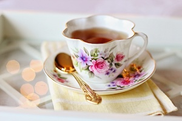

Image
Engagement Answers
1. Real life pictures and ones you take with your phone are good for JPEG because of how many colors there usually are. JPEGs are good at handling and compressing colors in photos.
2. GIFs have animation/short videos and are really good when you don't have a lot of different colors in your photos (ex: logos, simple cartoons).
3. PNGs are good to use with GIFs. PNGs are unique because they can have transparency, it will fill in spots that are not colored.
4. You can edit your photos through preview and the adjust size tool. The ideal size to aim for is a small laptop with the width of 1000-1200 and then the height should change with it. It's up to you on how big you want to make the picture.
5. Github has a limit on how big of a file you can upload to your webpage/website, so it will be rejected when you try to commit it to Gihtub. It can also use up a lot of people's data when they try to look at your webpage, so it's good to make it smaller so that doesn't happen. Using preview or another application will make it so the photo uses less data overall.